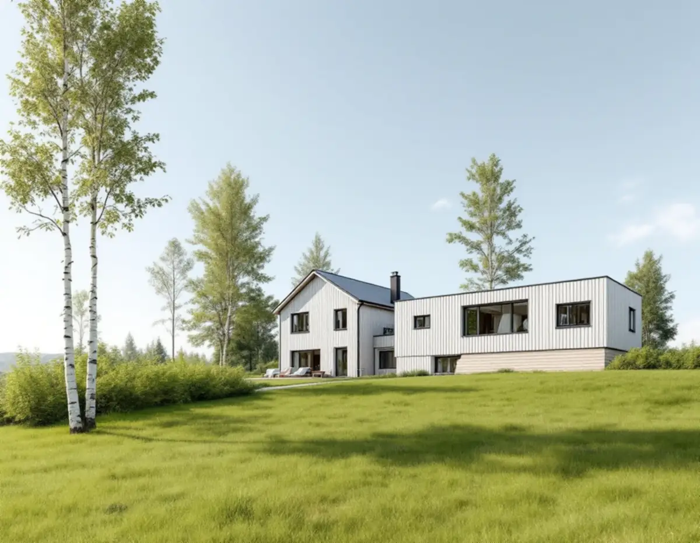
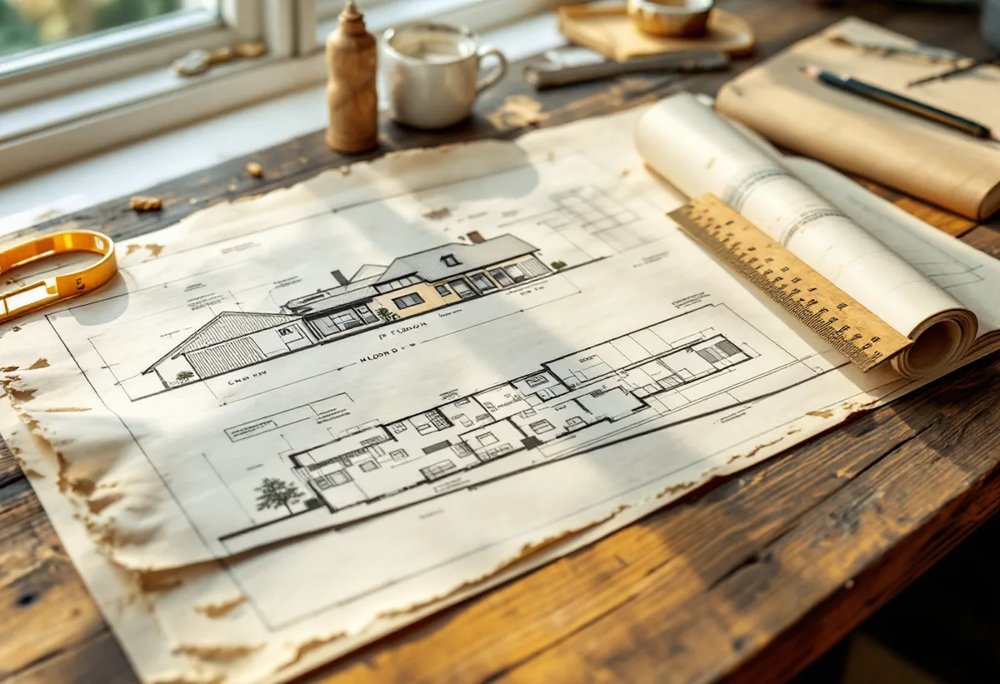
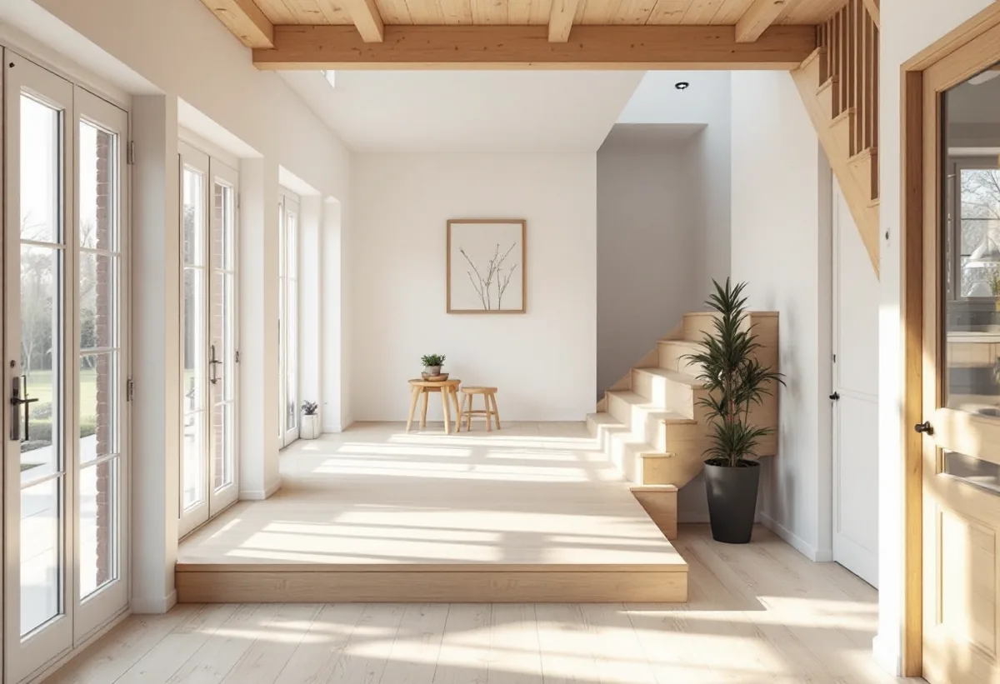

Arkivet
Husets gamla ritningar hämtas från bygglovsarkivet.
Vallentuna kommun beskriver en tillbyggnad som att du ökar byggnadens volym uppåt, nedåt eller åt sidan. Kommunen har också tydliga krav på hur ritningarna ska se ut, och de flesta villors gamla ritningar finns i ett digitalt arkiv. Geal Entreprenad AB bygger till villor i hela Vallentuna och börjar med husets egna handlingar.

Enligt kommunen får en lovfri tillbyggnad vara högst 30,0 kvadratmeter i bruttoarea eller öppenarea, och alla tidigare och nya bygglovsbefriade tillbyggnader på huset får tillsammans inte överstiga 30 kvadratmeter. Tillbyggnaden får inte vara högre än den befintliga byggnadens taknock och ska ligga minst 4,5 meter från tomtgränsen mot granne, samfällighet eller allmän platsmark som gata och park. Vill du bygga närmare krävs skriftligt medgivande från berörda grannar.
Kommunen skriver också att bygglov krävs om fastigheten ligger inom ett kulturhistoriskt särskilt värdefullt område, och att anmälan och startbesked krävs om vatten och avlopp eller ventilation installeras samtidigt som tillbyggnaden görs. Enligt Boverket kan anmälan även krävas om husets bärande delar eller brandskydd påverkas väsentligt.

Behövs bygglov ska ansökan ha en situationsplan i skala 1:500 och plan-, fasad- och sektionsritningar i 1:100. Fasadritningarna visar berörda fasader och vad som är befintligt och vad som är nytt. Sektionen ska gå genom både det befintliga huset och tillbyggnaden. Material och kulörer redovisas med NCS-koder, och en kontrollplan ska följa med.
Kommunen ställer krav på kvaliteten: ritningsnummer och datum så att versioner kan skiljas åt, alla mått i millimeter, norrpil på situationsplanen och ritningar som är fackmannamässigt utförda på vitt olinjerat papper. Planritningarna ska vara möblerade så att tillgängligheten kan granskas. Vi tar fram hela ritningsunderlaget och följer kommunens krav.
En detalj i kommunens krav är lätt att missa: finns det höjdskillnader mellan det befintliga huset och tillbyggnaden ska ramp eller hiss finnas. På en sluttande tomt, eller när golvet i tillbyggnaden hamnar lägre än i huset, avgör det hur grunden och golvnivåerna ska planeras. Vi mäter nivåerna vid platsbesöket och ritar golvet efter dem.
Kommunen beskriver också handlingar som kan behövas efter en första granskning. En bullerutredning behövs om gällande bullerriktvärden överskrids på fastigheten. En antikvarisk utredning behövs om byggnaden har höga kulturhistoriska värden. Uppgifter om kontrollansvarig gäller främst större tillbyggnader.
I Vallentunas digitala bygglovsarkiv finns ritningar över byggnader uppförda ungefär mellan 1950 och 2024, och cirka 75 procent av handlingarna är digitaliserade. Där finns fasad-, plan- och sektionsritningar och situationsplaner, alla i skala 1:100. Du söker på adress eller fastighetsbeteckning. Fastighetsbeteckningen hittar du i kommunkartan under Bygga, bo och miljö. Ritningar som inte finns digitalt kan beställas: ärenden äldre än fem år från arkivet, pågående och nyare ärenden från bygglovsavdelningen. Observera att arkivet bara visar avslutade och arkiverade ärenden.
Sektionsritningen visar bland annat våningshöjder och takfall, och det gör det lättare att planera hur tillbyggnaden ska anslutas till huset. Om villans tak och fönster kan du läsa under takrenovering i Vallentuna och fönsterrenovering i Vallentuna, och om större byggprojekt under byggföretag i Vallentuna.

Husets gamla ritningar hämtas från bygglovsarkivet.
Nivåer, avstånd och tidigare tillbyggnader mäts in.
Golvnivåer, takanslutning och placering ritas.
Situationsplan 1:500 och plan, fasad och sektion 1:100.
Bygglov, frivilligt lov eller anmälan för installationer.
Grund, stomme, tak och anslutningen mot huset.
Rotavdraget är högst 30 procent av arbetskostnaden, högst 50 000 kronor per person och år och högst 75 000 kronor tillsammans med rutavdrag. Material och resor ger inget avdrag.
Skatteverket godkänner en tillbyggnad av ett småhus om någon av tillbyggnadens sidor sitter ihop med husets yttervägg till minst 75 procent, eller om det finns en dörr emellan. Bostaden ska vara äldre än fem år och större delen av den ursprungliga stommen ska behållas. Bygglovshandlingar och arkitekt ger inget avdrag. Geal drar avdraget direkt på fakturan där det gäller.
Tillbyggnadens storlek, grunden och golvnivåerna, en ramp eller annan lösning för nivåskillnader, anslutningen mot taket och om bygglov behövs. Efter ett gratis platsbesök får du ett skriftligt kostnadsförslag.
Mer boyta i samma hus.
Tillbyggnad →Takbyte, takbesiktning och plåtarbeten.
Takläggare i Vallentuna →Villaområden och gårdar.
Takrenovering i Vallentuna →Inom eller utanför plan, avlopp och brunn.
Attefallshus i Vallentuna →Nytt våtrum, Roslagsvatten och egen brunn.
Badrumsrenovering i Vallentuna →Ritningar, grannar och kommunens mark.
Byggföretag i Vallentuna →Villor och grupphus från 1970-talet och framåt.
Fasadmålning i Vallentuna →Fritidshus, stationssamhällen och villor i Vallentuna.
Fasadrenovering i Vallentuna →Flygbuller, glasval och lov i Vallentuna.
Fönsterbyte i Vallentuna →Fönster i tegelvillan, fog och bågar.
Fönsterrenovering i Vallentuna →Golv på platta och golvvärme i villan.
Golvläggare i Vallentuna →Slipa och laga gamla golvplank.
Golvslipning i Vallentuna →Utbyggda kök, villor och gårdar.
Köksrenovering i Vallentuna →Rännor, plåttak och uthus i Vallentuna.
Plåtslagare i Vallentuna →Uthus, uterum och fritidshus.
Snickare i Vallentuna →Lovfrågan, skorstenen och arkivet.
Takbyte i Vallentuna →Spännpapp och papperstapet.
Tapetsering i Vallentuna →Gårdar, fritidshus och villor i Vallentuna.
Målare i Vallentuna →Radon när huset byggs om.
Totalrenovering i Vallentuna →